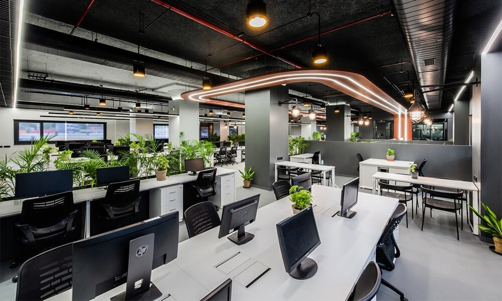

| |
HOME | SERVICES | TEAM | OUR STORY |
| |
| Web Development | Mobile Development | App Development |
|---|---|---|
| Web development është procesi i krijimit dhe zhvillimit të faqeve të internetit dhe aplikacioneve web. Kjo përfshin zhvillimin e kodit në HTML, CSS dhe JavaScript për të krijuar faqet dhe aplikacionet web. | Mobile development është procesi i krijuarjes së aplikacioneve mobile për pajisjet mobile si telefona inteligjentë dhe tabletë. Një aplikacion mobil mund të përdoret për shumë qëllime, përfshirë lojëra, komunikim, blerje online, dhe shërbime të tjera. | App development është procesi i krijuarjes së aplikacioneve për platforma të ndryshme si desktop, web, mobile, dhe wearable. Aplikacionet janë të dizajnuara për të ofruar shërbime të ndryshme si lojëra, komunikim, e-commerce, dhe shumë të tjera. |
ANËTARËT |
| Ekipi ynë përbehet nga: |
| Tringa Murati | Vlera Zogaj | Tringa Murati | Vlera Zogaj | Tringa Murati |
| Udheheqesja e ekipit | Software Engeener | Trajnerja | Profesoresha | Software Engeener |
|  | Historia e suksesitSot,kompania Perprogramera është një nga kompanitë më të vlerësuara në rajon, me një vlerë tregu prej mijëra eurosh dhe një reputacion të fuqishëm për dizajnin dhe teknologjinë e avancuar.Historia e kompanise Përprogramera tregon se një kompani mund të ndryshojë dhe të rritet duke qëndruar në shtegun e duhur dhe duke influencuar në mënyra të reja dhe të ndryshme në një treg gjithmonë në ndryshim. |
Pse duhet te na zgjidhni ne? |
| Kostoja dhe vlera: Pavarësisht nga çmimi, zgjedhja e kompanise tone mund të jetë më e arsyeshme sepse ofron vlerë të shtuar dhe zgjidhje të kërkuara me një kosto të arsyeshme. |
 |